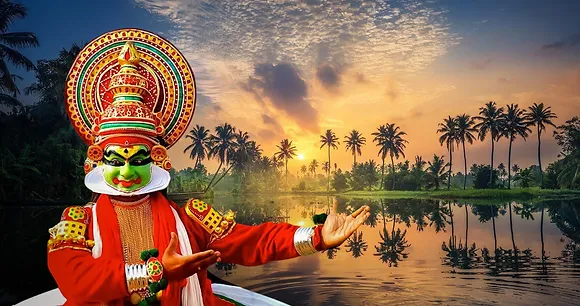
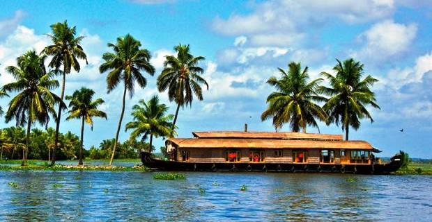
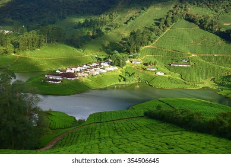
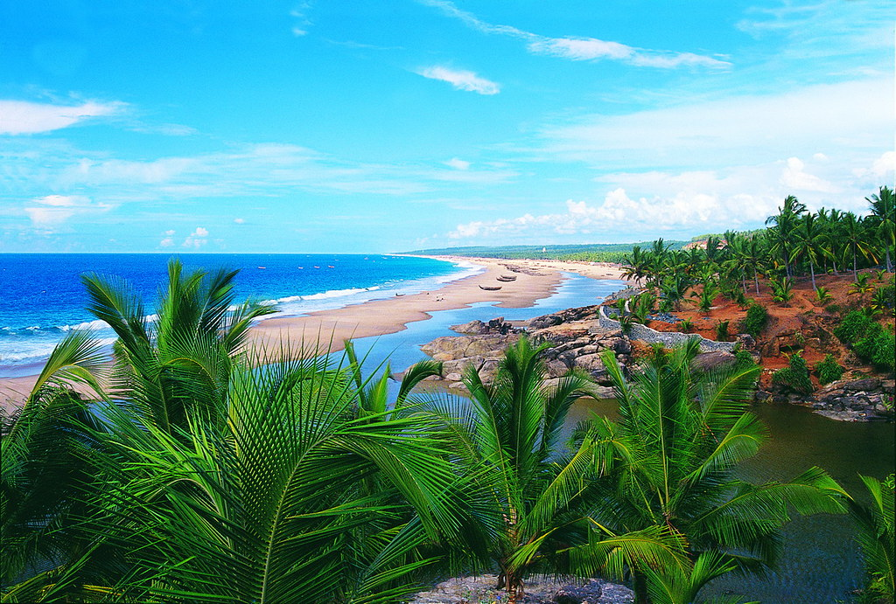

Kerala, a state on India's tropical Malabar Coast, has nearly 600km of Arabian Sea shoreline. It's known for its palm-lined beaches and backwaters, a network of canals.Inland are the Western Ghats, mountains whose slopes support tea, coffee and spice plantations as well as wildlife National parks like Eravikulam and Periyar, plus Wayanad and other sanctuaries, are home to elephants, langur monkeys and tigers.
Munnar is a town and hill station in the Idukki district of the southwestern Indian state of Kerala. Munnar is situated at around 1,600 metres above mean sea level, in the Western Ghats mountain range. Munnar is also called the "Kashmir of South India" and is a popular honeymoon destination.

Athiraplly waterfall is one of the largest waterfalls in India. It is situated 60 km away from Thrissur and 70 km away from Kochi. Its majestic waterfalls and enchanting rain forests make her a mesmerizing spot. Other places to visit in Athirapilly are Vazhachal Falls, Charpa Waterfall, Thumboormuzhi Dam & Garden, Chalakudy River, etc.

Thekkady is a town near Periyar National Park, an important tourist attraction in the Kerala state of India. The name Thekkady is derived from the word "thekku" which means teak. Temperatures are lowest in the months of December–January and highest in the months of April–May.

This popular town is famous for wildlife and its spice plantations. Wayanad is part of a forest reserve, located on the border of Tamil Nadu and Kerala. Because of it wild green coverage it offers great scenic beauty along with the experience of seeing wildlife.